Extract the music from your video.
Turn a video soundtrack into an audio file in a few clicks.
Windows context-menu media tools
Extract music from a video, cut a clip, shrink a file before sending it, create a GIF, resize an image or convert formats without opening a heavy editor.
Simple workflow
FFActions creates the result next to the original file and keeps your source untouched. Short dialogs, clear options, local processing.
Real-life shortcuts
Turn a video soundtrack into an audio file in a few clicks.
Compress videos, images or audio files with simple quality presets.
Trim videos visually by frame, or cut audio using a waveform preview.
Choose the start, duration, size, FPS and quality from a compact dialog.
Rotate or flip videos and images with a visual preview before exporting.
Switch between common video, audio and image formats from direct buttons.
Features
The page stays readable for normal users, but each tool keeps its factual description and supported formats.
Cut clips, create GIFs, compress videos, extract soundtracks and convert files quickly.
Cut video, crop video, create GIF, resize video, rotate / flip, interpolate, compress, convert, extract audio and remove audio.
mp4 · mkv · avi · mov · webm · m4v
Trim a recording, change speed or pitch, reverse a sound and reduce file size.
Cut audio with waveform preview, convert, change speed, change pitch, reverse and compress audio files.
mp3 · wav · flac · m4a · ogg
Resize for upload, crop the useful area, convert formats or create an icon.
Resize, crop, convert, compress, rotate / flip and convert images to icon files.
png · jpg · jpeg · webp · bmp · ico output
Local and transparent
FFActions runs locally on Windows and uses FFmpeg / FFprobe under the hood. It is open source and focused on quick everyday operations.
Screenshots
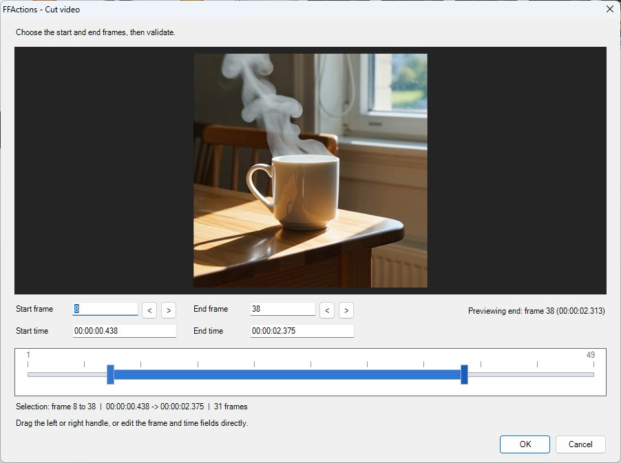
Live preview, dual-handle timeline, frame and time inputs.
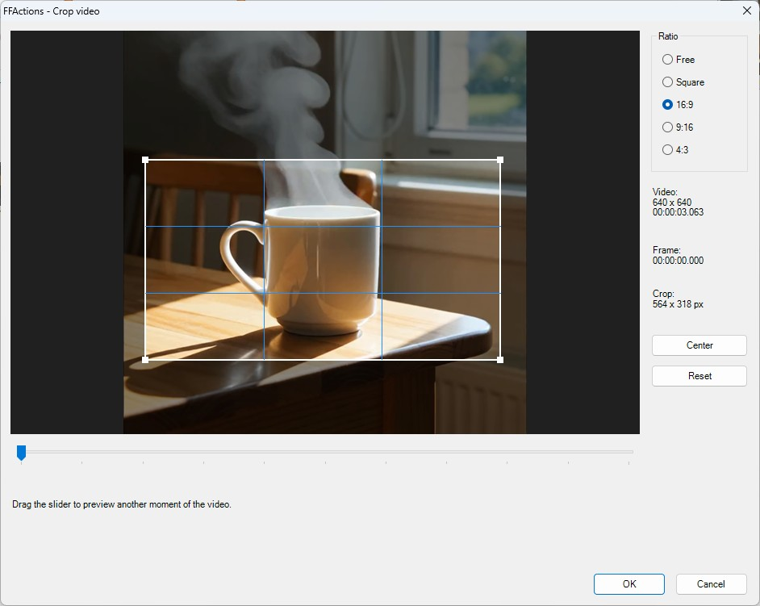
Preview frame, ratio presets, center and reset controls.
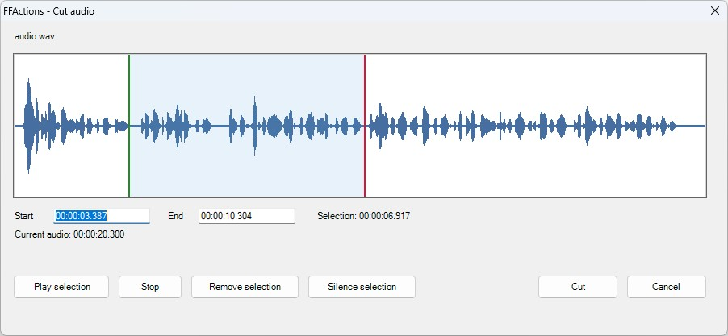
Waveform preview, selection playback, remove or silence selection.
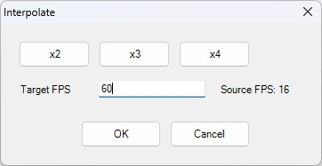
Preset sizes, custom dimensions and ratio-aware resizing.
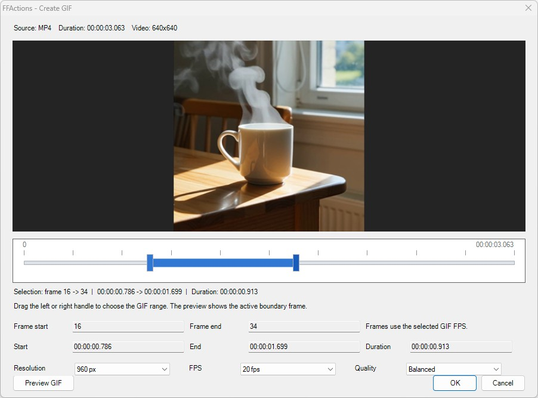
Resolution, FPS and quality presets.
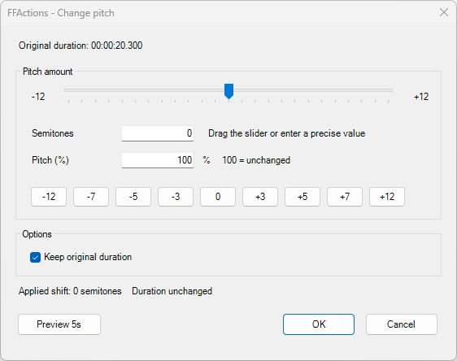
Slider, presets, synchronized values and 5-second preview.
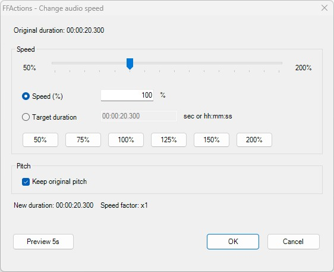
Slider-driven speed changes with target duration sync and preview.
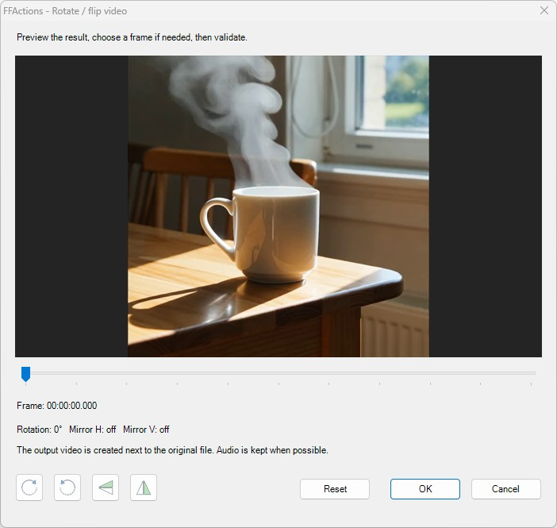
Visual preview with direct transform buttons.
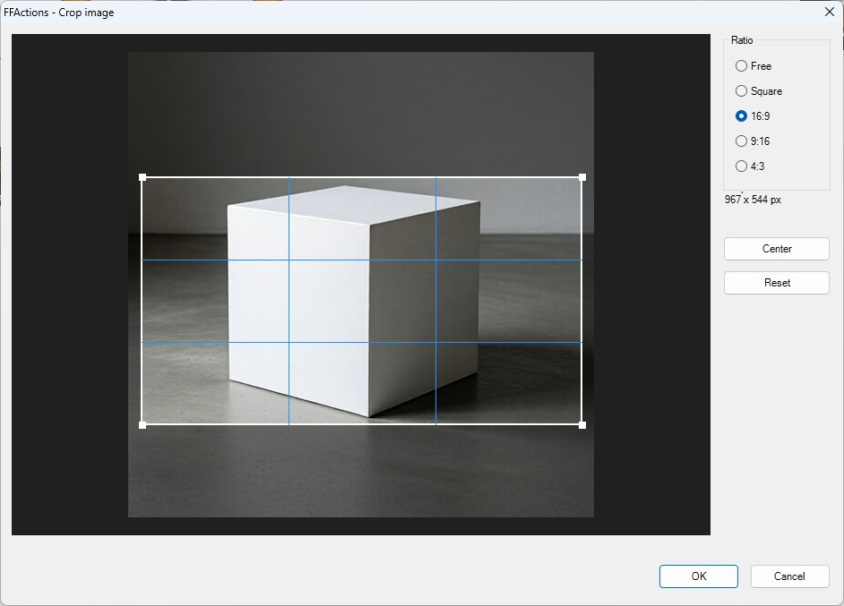
Visual crop area, size readout and ratio presets.
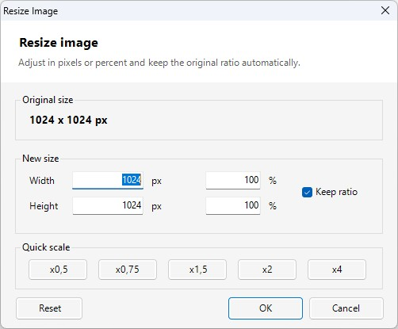
Pixel and percentage resize with automatic ratio handling.
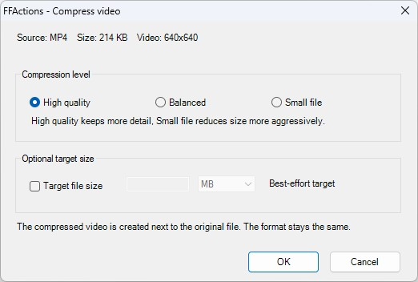
Simple quality choices for smaller exports.
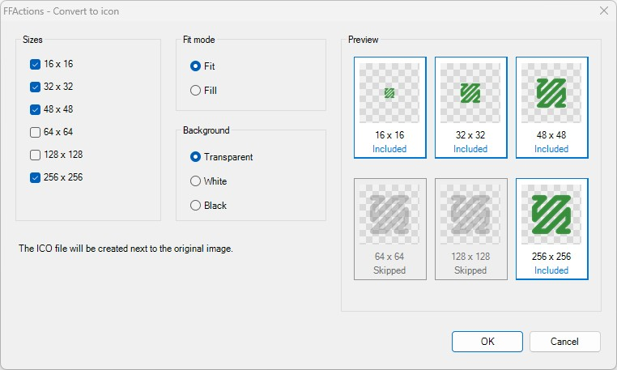
Generate Windows icon files with dynamic size previews.
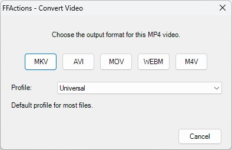
Direct-click output format picker.

Fast format selection for common audio types.
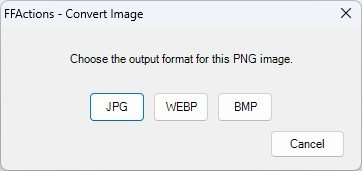
Compact image format selection.
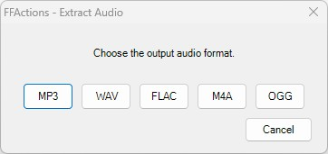
Choose an audio output format from a video.
Download
Get the latest installer from GitHub Releases, or inspect and build the source manually.